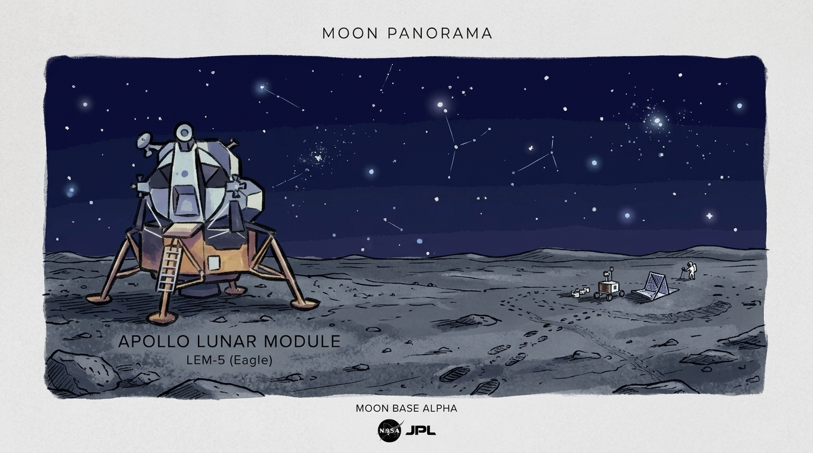

01 / 04
Descubre los objetos, máquinas y rastros que la humanidad ha dejado en otros mundos. Cada objeto cuenta una historia de exploración.
COMENZAR EXPLORACIÓN →UN VISTAZO AL ESPACIO

Selecciona un destino y descubre qué hemos dejado allí.
Juegos
Ubica las misiones y ordénalas en la línea del tiempo.
La Luna
Herramientas, módulos y vehículos de las misiones Apolo.
Marte
Rovers, módulos y tecnología de exploración.
Más allá
Historias de naves y telescopios que ampliaron nuestro universo.
ARCHIVO VISUAL INTERACTIVO
Reproduce videos históricos de las misiones Apollo y de la exploración de Marte.
20 de Julio, 1969
Secuencia del descenso final y alunizaje del módulo lunar Eagle en el Mar de la Tranquilidad.
18 de Febrero, 2021
El despliegue del paracaídas supersónico y la maniobra Sky Crane en el cráter Jezero.
14 de Diciembre, 1972
El despegue de la etapa de ascenso del módulo Challenger desde el valle Taurus-Littrow.